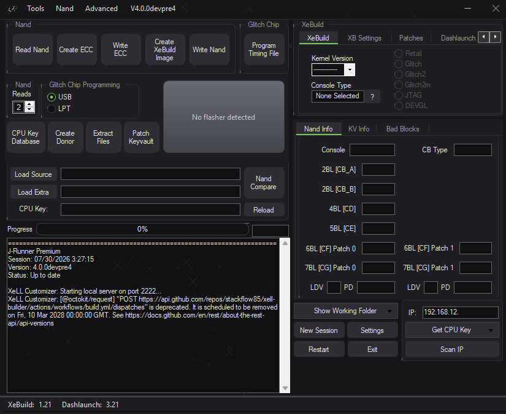
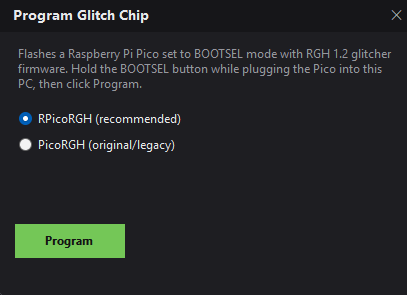
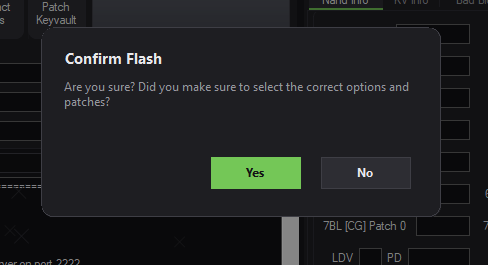
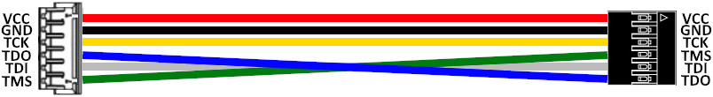
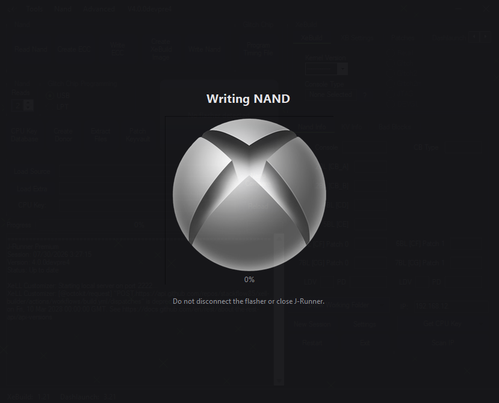
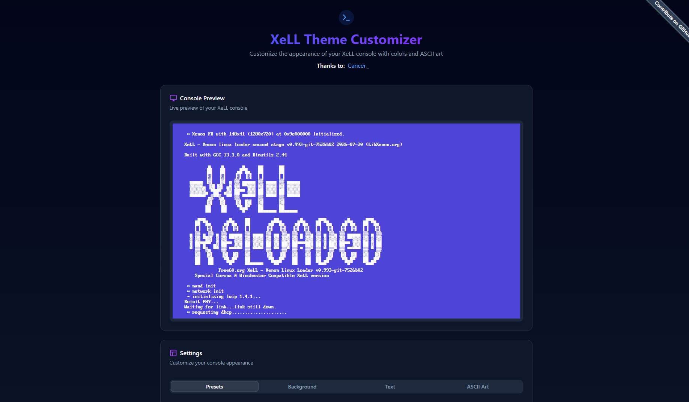

J-Runner Premium reads and writes your console's NAND, builds the XeBuild image that goes on it, programs the glitch chip that boots it, and keeps every key and dump in one place. Free, open source, and built by the modding scene.

Read this before you flash anything. Writing a bad image to your console's NAND will brick it. Dump your NAND at least twice and keep those dumps somewhere safe. Never disconnect the flasher or close J-Runner while a write is running. If you are not sure what a setting does, stop and ask in the scene before you press Write.
Modding a 360 normally means juggling half a dozen command-line tools. J-Runner Premium wraps the whole sequence — dump, inspect, build, program, write — into a single window that walks in the order you actually work.
Dump the console's flash memory over your flasher, verify it across multiple reads, and write a patched image back when you're ready. Every step reports into the session log as it happens.
Pick a kernel version and console type, choose your CB type — Retail, Glitch, Glitch2, Glitch2m, JTAG or DEVGL — and J-Runner assembles the image, patches and Dashlaunch config for you. No command line, no guessing at arguments.
Flash a Raspberry Pi Pico with RGH 1.2 glitcher firmware to use it as a Glitch Chip. You can do this straight from the app: hold BOOTSEL, plug it in, click Program.

We will help make sure you get everything right. If you missed something, we'll give you the chance to correct it before you flash the Nand

J-Runner detects your flasher on startup and shows it in the main window. If you're buying new, a Raspberry Pi Pico running PicoFlasher is the cheapest way in — around the price of a coffee.

XeLL is the loader screen you stare at every time the console boots. J-Runner starts a small web app on your machine that lets you recolour it and swap the ASCII banner, then generates a custom XeLL build to flash. Pick a community preset or build your own from the eleven colours LibXenon supports.
Live preview — the same one the customizer shows at localhost:2222.
No mockups. This is what it looks like on a real machine.


J-Runner Premium is a fork in a long line of scene tools, and it wouldn't exist without the people who built what came before it.
Grab the latest package, read the getting-started guide, and dump your NAND twice before you do anything else.